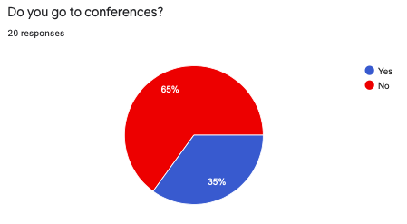
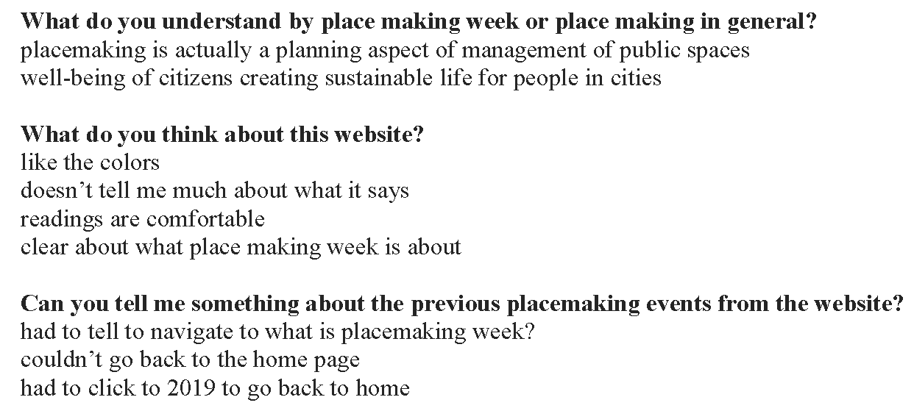
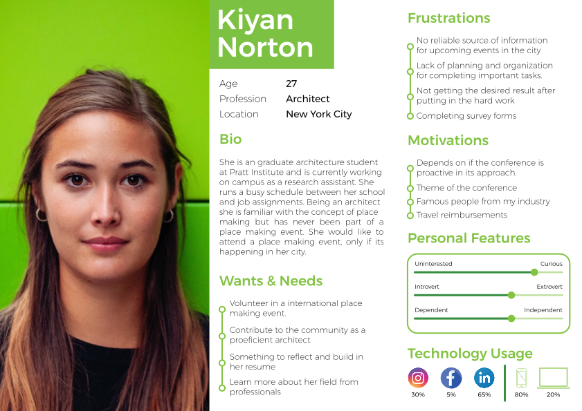
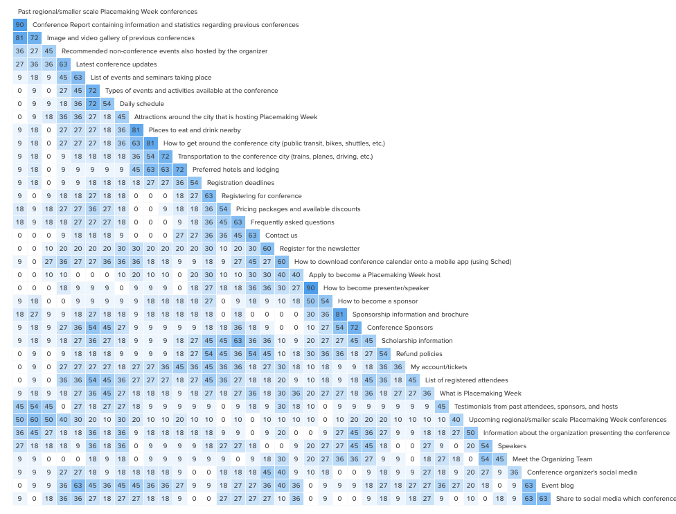
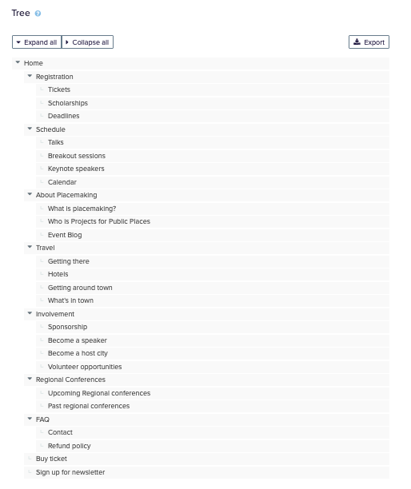
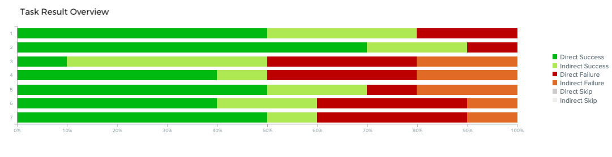
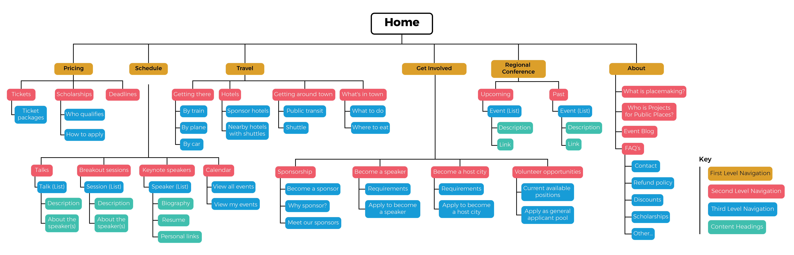
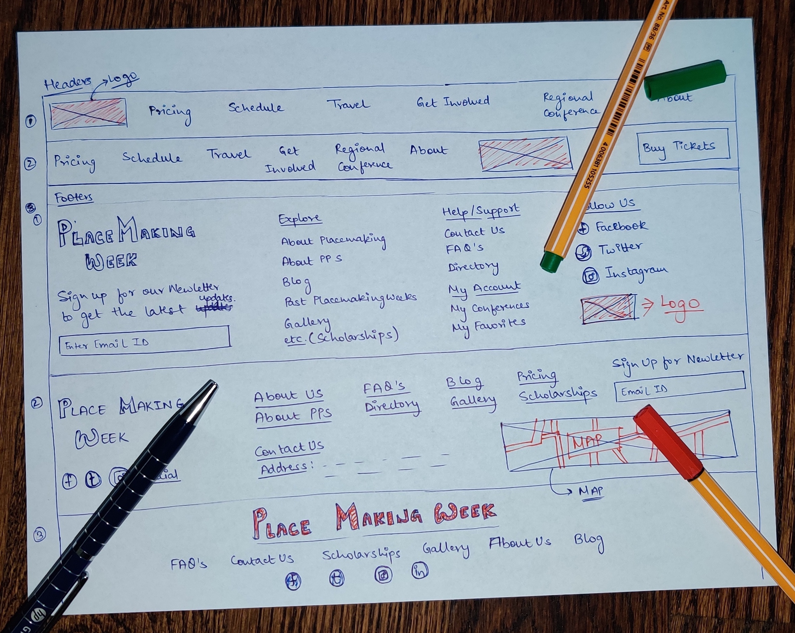

Inconsistent Navigation & Cluttered Information
Placemaking Week — a subset of Project for Public Spaces — is a weeklong global gathering emphasizing hands-on learning and innovative social events, while leaving behind a public space legacy in host cities around the world.
The current website suffered from two compounding problems: it was text-heavy to the point of overwhelming users, and its dynamic navigation menu created a labyrinth with no clear escape. The "back" button was users' only rescue. Together, these two factors were actively discouraging potential attendees from registering.
"[This is] too much text, I am not gonna read through all of this."
— Observation Study ParticipantMixed Methods Study
We focused on students as our primary user group — particularly interesting given that they represent only 5% of total attendees, yet are a key demographic for building long-term conference community. I consulted students from business, design, computer science, and architecture to capture a diverse range of needs.
We combined qualitative data from 15 in-person interviews and 10 usability tests with quantitative data from an online questionnaire to build a comprehensive picture of user needs.



Fixing the Information Architecture
Preliminary research made it clear that fixing the IA was the single highest-priority intervention. Our high-level navigation goals were clear:
- Consistent navigation menu across all pages
- Simplified structure accessible to every user group
- Intuitive labelling system that maps to user mental models
Card Sorting — 38 Cards, 11 Participants
We defined 38 cards combining previous user input, terminology from the existing site, and language used by other well-known conferences. The card sort was conducted with 11 participants using Optimal Workshop.
The sort partially failed — we ended up with 61 unique categories. Rather than a setback, this revealed the depth of labelling confusion. Users weren't confused by the content; they were confused by the language used to describe it.

Tree Testing — 10 Participants, 7 Tasks
Taking card sort insights, we modified the labelling system and ran tree testing with 10 participants (5 in-person, 5 remote) using 7 short tasks designed to test navigation across key user journeys.



From Paper to Pixel
Every team member was responsible for sketching one section. I owned the header and footer — drawing two header iterations and three footer iterations. We then digitized paper prototypes and tested them remotely with 5 users (COVID forced the pivot from our in-person plan).
Key Feedback from Prototype Testing
- Users expected clicking on speaker photos to reveal more information
- Navigation menu order was counterintuitive — users expected "About" first

Style Guide
The visual redesign aimed to retain the organization's identity while updating components for better contrast and aesthetic appeal. The redesign uses the Open Sans typeface with a responsive 12-column grid system, and a color palette that inherits legacy while improving contrast ratios.

Impact & Reflections
The client appreciated how the research-driven IA improvements translated directly into cleaner navigation and a more inviting first impression. We redesigned three pages for both desktop and mobile platforms.